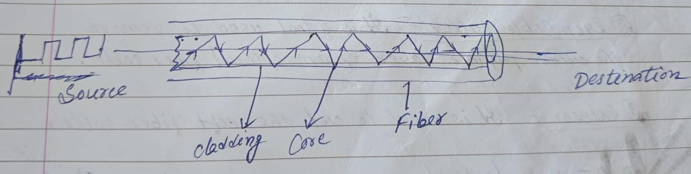
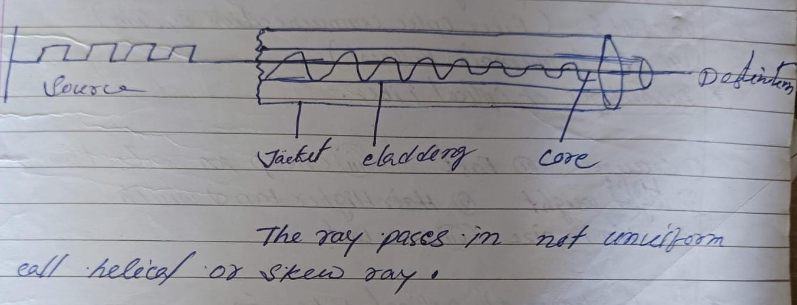
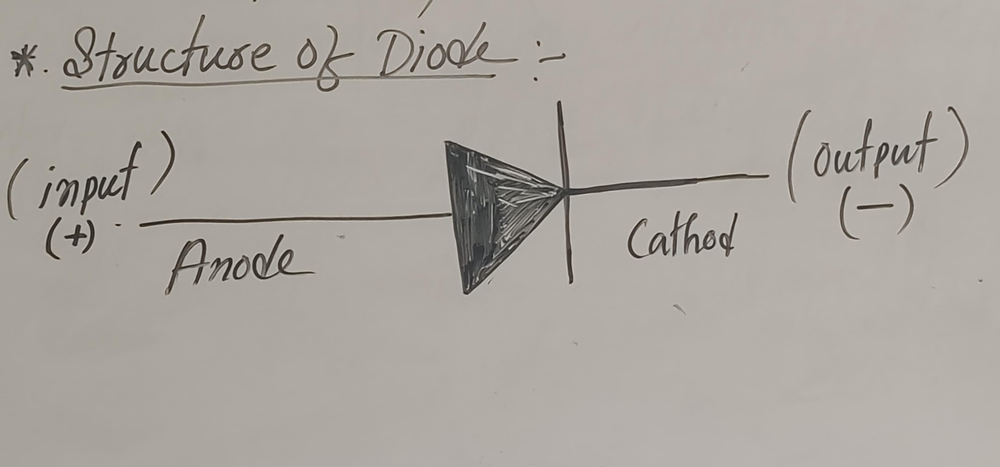
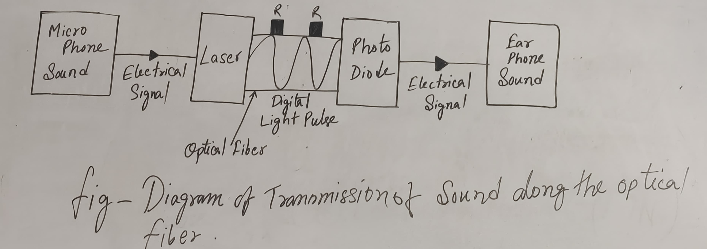
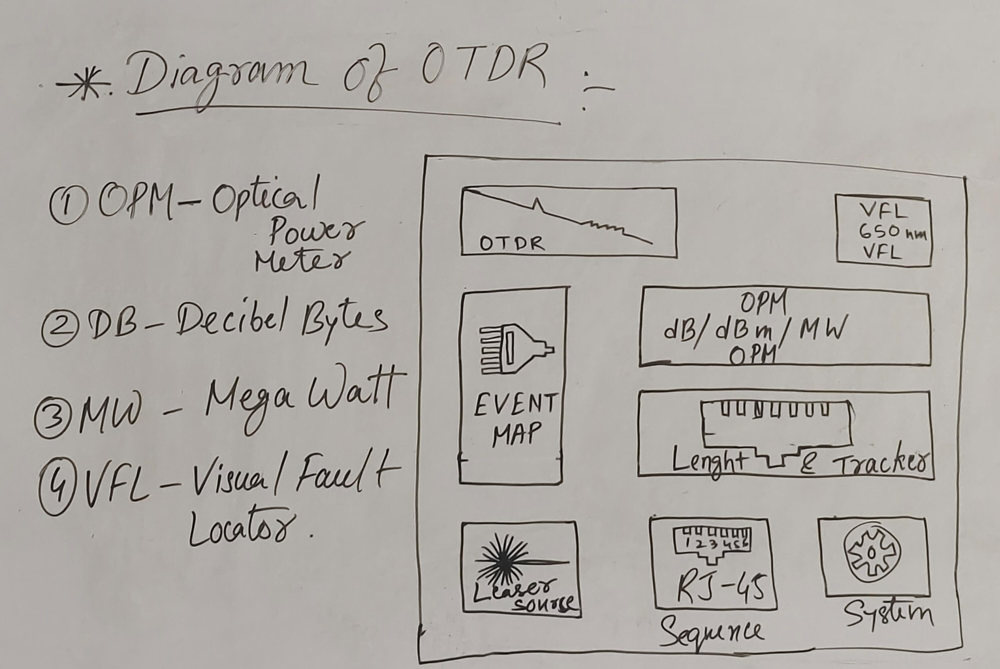

{kind=link}
ABOUT ME
Hi, I am Gyandeep Duwarah from the 11th batch DDugky, and I made this website to store the notes of our classes.
OPTICAL FIBER
What is Optical Fiber?
An Optical fiber is a cylindrical fiber of glass, which is hair-thin in size, or any transparent dielectric medium. It is a technology that transmits information as light pulses along a glass or plastic fiber.
Note: (µm = micron)
Core Diameter: 5 µm to 100 µm
Cladding Diameter: 125 µm
Jacket Diameter (Buffer Coating): 250 µm to 900 µm
Core: The inner part of the optical fiber, made of an optically transparent dielectric medium, carries the light transmitted to the receiver.
Cladding: The outer optical material surrounding the core, with a refractive index lower than the core, helps keep the light within the core through total internal reflection.
Coating or Plastic Jacket: A plastic coating that protects the fibers, typically made of silicon rubber, with a diameter of 250-300 µm.
Types of Optical Fibers:
Single Mode: Used for long-distance transmission of signals.
Multi Mode: Used for short-distance transmission of signals.
Types of Optical fiber on the basis of refractive index
Step Index:-It consists of a core surrounded by the cladding which has a single uniform index of reflaction Draded Index:-The reflected index of the optical fiber decrease as the radial distance from the fiber axis increases and distance from the fiber axis increases 
Advantages of optical fiber:-
- 1.Secure
- 2.Fast
- 3.Light Weight
- 4.Higher Bandwidth
- 5.Thin on size
Disadvantages of optical fiber:-
- 1.Need expert for installation(more difficult to store)
- 2.Easilt gets Damage
- 3.Production and installation costly
Types of Splicing Machine:-
1.Fusion splicing machine:-It achives fiber optics termination with heat generated by an electric arch which it also called arch fusion.
2.Mechanical fusion splicing machine:-It is a function of two or more optical fibers which are precicely align at held in placed by a mechanical assemble.
Characteristics of optical fibers:-
Characteristics of a optical fiber are classified into two types:-
1.Linear
2.Non Linear
Linear Characteristics:-
(a) Low power Transmission:-Optical fiber behaves linearly at low power level ,with a direct propotional relationship between input and output signals.
(b) Attenuation:-Signal loss due to absorption and scattering follows a linear pattern.
(c)Chromatic dispersion:-Spreading of the signals due to different wavelength travelling different speed is linear.
Non Linear Characteristics:-
(a)Self Phase Modulation(SPM):-High intensity signals cause a phase shift, affecting signal quality.
(b)Cross-phase modulation(XPM):-Interraction between multiple signals effects their phases.
(c)Four-Wave mixing(FWM):-Signals at different wave lengths interract generation new frequencies.
(d)Stimulated Raman scattering(SRS):-High intensity signals transfer energy to lower frequency signals.
(e)Non Linear Reflective Index(NRI)High intensity signals change the fiber reflective index,affecting signals transmission.
Types Of Connectors:-
LC: Lucent connector
SC: Square connector
FC: Ferrule Connector
STC:- Straight Tips Connector
1.Lucent connector:-Push pull small from factor connector that used a 1.25 ferrule.
2.Ferrule Connector:-It is applied for single mode optic fiber and polization and methods maintaining optic fiber
3.Straight Tips Connector:-Is mainly used in multimood fiber optic cable
4.Square connector:-Is a fiber optic cable connector that use a push pull latching mechanism
Applications of optical Fiber uses of optied Fiber :-
- 1. Telecommunication Purpopes (BSNL, Jio Fiber)
- 2. Banking purposes (ATM)
- 3.Industrial Purposes
- 4.Medical Purposes (Endoscopy)
- 5.omputer networking
- 6.Internet
- 7.Military Purposes
- 8.Local Area Network(LAN)
Structure Of a Diode:-
Conductor:- Conductor is a material that allow electicity to flow through i.For eg-Silver,Iron,Steal and Gold
*Draw a Block diagram of transmission of sound along the optical fiber-
- Sound is first converted into electricd signal by a Microphone.
- In the electrical Signal Modulde The intensity of Light form Laser.
- Then the information is carried along the fiber in a digital form.
- Reapeter is a device that repeat and increase the power of optical signal.
- At the recieving place a photodiode converts the digital light pulses into corresponding electrical signal.
- The electrical Signal Converted into Sound by an Earphone (Reciver).
Optical Transmitter:-
An optical transmitter is a device that converts electrical and analog signals into Linear modulating light signals.Them it release the data into the fiber optic cable.The pattern of light waves forms a code that carries a message. The cable than release the data emitted by the optical transmitter to the optical reciever. The reciever accpts the light signal an reformat the data into its original
Optical Reciever:-
The reciever essentially performs the opposite function of the transmitter. Optical reciever as recieve the light signal from the fiber optic cable and turn it break into information.A computer or television know how to understand and use the information. The decoded signal is sent to the computer or television.
Optical Regenerator:-
Sometimes a light signal must travel through a fiber optic cable over a long distance.Although signal degradation is minimal in a fiber optic cable. Some degradation does not occor. When a cable covers a long distance optical regenerators are placed at certain intervalas along the cable optical regenarators are fibers that have been treated with a laser.The laser properties strengthen the light signal that is travlling through a fiber optic cable.
*Diagram of OTDR:-
MCQ Quiz
Ans:-A)Thomas Menash
Ans:-C)800THz
Ans:-C)Graded Index
Ans:-C)Single Mode Fiber
Ans:-C)Buffer coating
Ans:-B)Step Index Multimode
Ans:-B)LED
Ans:-B)200,000 hours
Ans:-B)to transmit light signals
10. What is the core of an optical fiber made ofAns:-A)Glass
10. Which of the following is a benifit of Optical Fiber?Ans:-A)High Security
Full Forms:
Full Forms:
VCSEL: Vertical Cavity Surface Emitting Laser
IDE: Integrated Device Electronics
SATA: Serial Advanced Technology Attachment
EMI:- Electro Magnetic Interference
SM:- Single Mode
TIR:- Total Internal Reflection
CRT:-Cathode Ray Tube
LCD:-Liquid Crystal Display
MM:- Multi Mode
OSI:-Open System Intercommunication
PLC:- Planted Light Weight circuit
ANSI:- American National Standard institute.
OTDR:- Optical Time Domain Reflectometer.
UTP:- Unsheeld Twisted pars cable.
SMPS:- Swith mode power supply.
POF:- Plastic optical fiber
LASER:- Light Amplification by Eimulated Emission Radiation.
FTTH:- Fiber to the Home.
OHS:- Occupation Health and Safety
LED:- Light Emelting Diod
FOCUS:- Fiber optic Communication
RFI:-Radio Frequency Interferenced
CATV:- Community Anthena Televison
PPE:- Personal Protective Equipment
DV:-Decibal Bytes
MW:-Mega Watt
CCTV:-Closed Circuit Television
SONET:-Synchronous optical network
VFL:-Visual Fault Locator
RJ 45:-Register Jack 45
IP:-Internet Protocol
OPM:-Optical Power Meter
SDH:-Synchronous Digital Hierachy
FRT:-Fast response Time
NOC:-National Occupational Centre
O&M:-Operation & Maintainance
NEC:-National Electrical Core
GIS:-Geographic Information System
RCC:-Reinforce Cement Concrete
HTTP:-Hyper Text Transfer Protocol
URL:-UNIFORM RESOURCE LOCATOR
Here are some equipment names used in LAB
Splicing machine
A fiber splicing machine is a device used to permanently join two core together
Splicing Tray
It is designed to provide space to store the optical cable and the splicer and prevent them from becoming damage or misplace
Jointcloser
It is a device used to provide space and protection for fiber optic cable splicede together
Reel
It is round dramshaped object as apoon used to carry various type of optical fiber
Stripper
It is used to remove the outer part of the optical fiber
Cutter
It is used to cut the metal cable and fiber also
Drop table cutter
It is a tool used to remove the outer polymer layer of an optical fiber
Scissors
It is used to Cut the soft fiber cable
OTDR(Optical time domain Reflecto meter)
It is a device that the integrity of the fiber cable & is used for building maintainance and troubleshooting fiber optic system

Tweezer
It is used to arrange and assamble tiny object
Fiber Clever
It is used to cut the core in 90° of the optical fiber
Round Table Cutter
It is used to remove the outer layer of co-axial cable(UTP cable)
Isopropyl Alcohol
Stripper
It is used to remove the outer part of the optical fiber
Scissors
It is used to Cut the soft fiber cable
Power Meter
Power meter is used to measure power in an optical signal